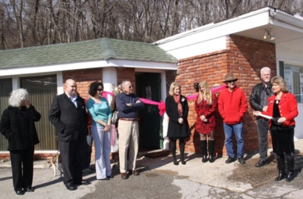

Services
Spay and Neuter
Providing low cost spay, neuter, and vaccination services to qualified pet owners.
Spay and Neuter services provided for cats, dogs, kittens, puppies, non-profit rescue groups, and feral (free roaming) cats.
Kittens must be at least 3 months old and 3 pounds.
Puppies must be at least 3 months old before being spayed or neutered.
Minimum weight requirements may also apply.
Microchipping
Only $25 to help keep your pet safe.
$20 for Qualified Households
Collars and tags can fall off and can sometimes even harm your pet. Micro-chipping is safe and permanent! The microchip is about the size of a large grain of rice and is inserted underneath the skin using a syringe (not unlike a vaccination). If your pet becomes lost, a veterinarian can safely “scan” your pet using a handheld device to identify your pet and help them find their way back home!
Please call us at 816-336-1888 to schedule an appointment to bring your cat or dog in for lifetime micro-chipping!
Trap Neuter Return (TNR)
The only HUMANE method to help control feral cat over-population.
A feral (free roaming cat) is a cat born and raised in the wild who has never had contact, or only very limited contact with humans, or a cat who has been lost or dumped and has turned "wild" in order to survive in their environment. These cats often live-in groups called colonies and they can be found living in secluded wooded areas, suburbs or right in the middle of a city.
Cats who live in a managed colony that are spayed and neutered, vaccinated against rabies and provided food, water and shelter (and medical attention when necessary), can live a happy life. However, there will always be risk involved as there are many dangers associated with any cat living outside. Free roaming cats do NOT pose a danger to people and will usually go out of their way to avoid contact with people.
The NAWS Low Cost Spay & Neuter Clinic provides spay, neuter and vaccination services to free roaming/stray cats. All cats also receive a left ear tip as a means of identifying the cat as having been spayed or neutered and vaccinated.
Grooming
Hello, my name is Terry...
I am a certified veterinary assistant and a lifelong animal advocate. I have been working with animals as a professional pet groomer for over 20 years. I also owned and operated three pet supply stores with grooming salons in California.
I am a little different from most groomers. Instead of dropping them off for the day, you are welcome to stay and watch. It takes me about an hour to groom most pets. I welcome all kinds of cats and dogs, whether they're timid sweeties or proud divas. All are welcome!
Grooming services include bathing, haircuts, ear cleaning, nail trimming, comb-outs, hand scissoring,
and more.
There are no extra charges, and they get whatever they need.
Qualifying costs
- Small breeds up to 25 lbs $25-$35
- Medium breeds up to 40-60 lbs $40-$55
- Large breeds 61 lbs and up $60-$100
Non-qualifying costs
- Small breeds up to 25 lbs $35-$45
- Medium breeds up to 40-60 lbs $55-$80
- Large breeds 61 lbs and up $80+
Pet Training
Four Legged Frenzy LLC
Hello, my name is Jeremiah Magruder, and I am the owner and master dog trainer at Four Legged Frenzy, LLC. My love of dogs started when I was young and has continued ever since. I have multiple certifications in different methodologies of training as well as graduating at the top of my class from Starmark School for Dog Trainers. I have experience training dogs in basic obedience, advanced obedience, off-leash obedience, agility, nose work, narcotic scent detection, personal protection, search and rescue, tracking, and service dog training.
New puppy? No problem! My specially designed group puppy classes are centered around the crucial puppy imprinting period to help you raise a stable, confident dog as well as help you navigate the struggles of puppyhood with house manners, potty training, and crate training.
Feel free to contact me directly if you have any questions at (808) 465-7212.